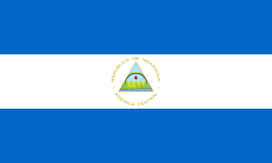

Símbolos patrios:
- Bandera: Franjas azul, blanco, azul con el escudo en el centro.
- Escudo: Tiene un triángulo con montañas y un arcoíris.
- Flor nacional: Sacuanjoche.
- Ave nacional: Guardabarranco.
Historia:
Se independizó de España el 15 de septiembre de 1821. Tras varias dictaduras y conflictos,
tuvo una guerra civil en los 70s y 80s, destacando el conflicto con los "Contras".
Extensión territorial:
Nicaragua tiene una extensión territorial de 130,373 km2.
Departamentos:
Cuenta con 15 departamentos y 2 regiones autónomas, como Managua, León, y Matagalpa.
Lugares turísticos:
- Granada (ciudad colonial)
- Islas del Maíz
- San Juan del Sur (playa)
- Volcán Masaya
- Lago de Nicaragua y Ometepe